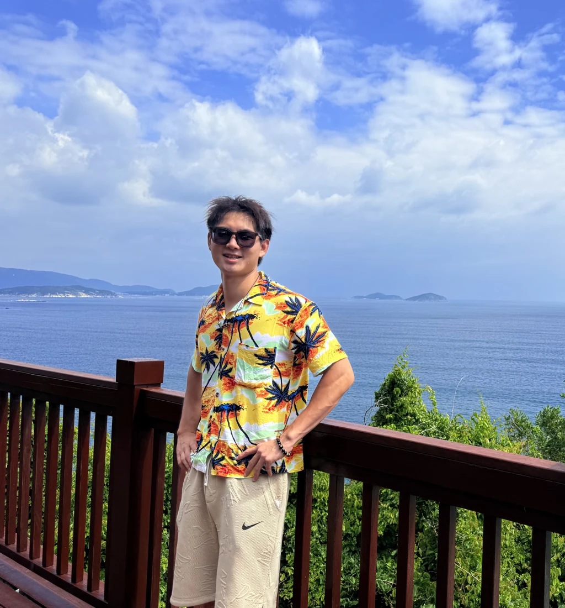

Rui Xue
科学计算 · 计算流体力学 · 科学机器学习
我是薛睿，关注复杂工程系统的物理建模、降阶代理与稀疏感知。希望结合数值模拟和数据驱动方法，提高模型的计算效率与可靠性。
我毕业于中国石油大学（北京），获石油与天然气工程硕士学位；本科就读于江苏科技大学船舶与海洋工程专业。
研究兴趣
研究项目
RESEARCH论文与手稿
PUBLICATIONS撰写中
实习与工作经历
EXPERIENCE教育背景
EDUCATION荣誉与奖励
HONORS & AWARDS发明专利
PATENTS研究之外
海边的一刻。
